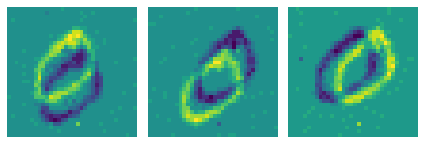
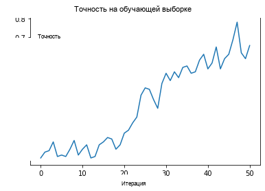

Русский перевод. Неофициальный перевод актуальной документации snnTorch latest (0.9.4). Оригинал: https://snntorch.readthedocs.io/en/latest/. Документация распространяется по лицензии CC BY-SA 3.0.
Учебник 7 - Нейроморфные наборы данных с Tonic + snnTorch
Учебное пособие написано Грегором Ленцем (https://lenzgregor.com) и Джейсоном К. Эшрагианом (www.ncg.ucsc.edu)

Серия учебных пособий snnTorch основана на следующей статье. Если вы считаете эти ресурсы или код полезными в своей работе, пожалуйста, укажите следующий источник:
Примечание
- Этот учебник является статической нередактируемой версией. Интерактивные редактируемые версии доступны по следующим ссылкам:
Введение
В этом руководстве вы:
Узнайте, как загружать нейроморфные наборы данных с помощью Tonic
Используйте кэширование для ускорения загрузки данных
Обучите CSNN с помощью Neuromorphic-MNIST Набор данных
Установите последнюю версию дистрибутива snnTorch из PyPi:
pip install tonic
pip install snntorch
1. Использование Tonic для загрузки нейроморфных наборов данных
Загрузка наборов данных с нейроморфных сенсоров стала очень простой благодаря Tonic, который работает так же как PyTorch vision.
Давайте начнем с загрузки нейроморфной версии набора данных MNIST, называемой N-MNIST. Мы можем взглянуть на некоторые сырые события, чтобы понять, с чем мы работаем.
import tonic
dataset = tonic.datasets.NMNIST(save_to='./data', train=True)
events, target = dataset[0]
>>> print(events)
[(10, 30, 937, 1) (33, 20, 1030, 1) (12, 27, 1052, 1) ...
( 7, 15, 302706, 1) (26, 11, 303852, 1) (11, 17, 305341, 1)]
Каждая строка соответствует одному событию, которое состоит из четырех параметров: (x-координата, y-координата, временная метка, полярность).
x и y координаты соответствуют адресу в \(34 \times 34\) сетке.
Временная метка события записывается в микросекундах.
Полярность указывает, произошел ли on-спайк (+1) или off-спайк (-1) ; т.е. увеличение яркости или уменьшение яркости.
Если мы накопим эти события с течением времени и отобразим бины в виде изображений, это будет выглядеть так:
>>> tonic.utils.plot_event_grid(events)
{kind=link}

1.1 Преобразования
Однако нейронные сети не принимают списки событий на вход. Сырые данные должны быть преобразованы в подходящее представление, например, тензор. Мы можем выбрать набор преобразований для применения к данным перед подачей в нашу сеть. Нейроморфный камерный сенсор имеет временное разрешение в микросекундах, которое при преобразовании в плотное представление приводит к очень большому тензору. Вот почему мы группируем события в меньшее количество кадров с помощью ToFrame преобразование, которое снижает временную точность, но также позволяет работать с ним в плотном формате.
time_window=1000объединяет события в 1000\(~\mu\)s биныDenoise удаляет изолированные, единичные события. Если ни одно событие не происходит в пределах окрестности размером 1 пиксель через
filter_timeмикросекунд, событие фильтруется. Меньшееfilter_timeбудет фильтровать больше событий.
import tonic.transforms as transforms
sensor_size = tonic.datasets.NMNIST.sensor_size
# Denoise removes isolated, one-off events
# time_window
frame_transform = transforms.Compose([transforms.Denoise(filter_time=10000),
transforms.ToFrame(sensor_size=sensor_size,
time_window=1000)
])
trainset = tonic.datasets.NMNIST(save_to='./data', transform=frame_transform, train=True)
testset = tonic.datasets.NMNIST(save_to='./data', transform=frame_transform, train=False)
1.2 Быстрая загрузка данных
Исходные данные хранятся в формате, который медленно читается. Чтобы ускорить загрузку данных, мы можем использовать дисковое кэширование и пакетную обработку. Это означает, что после загрузки файлов из исходного набора данных они записываются на диск.
Поскольку записи событий имеют разную длину, мы предоставим функцию
сведения (collation) tonic.collation.PadTensors() которая дополнит более короткие
записи, чтобы все образцы в пакете имели одинаковые размеры.
from torch.utils.data import DataLoader
from tonic import DiskCachedDataset
cached_trainset = DiskCachedDataset(trainset, cache_path='./cache/nmnist/train')
cached_dataloader = DataLoader(cached_trainset)
batch_size = 128
trainloader = DataLoader(cached_trainset, batch_size=batch_size, collate_fn=tonic.collation.PadTensors())
def load_sample_batched():
events, target = next(iter(cached_dataloader))
>>> %timeit -o -r 10 load_sample_batched()
4.2 ms ± 119 µs per loop (mean ± std. dev. of 10 runs, 100 loops each)
Используя дисковое кэширование и загрузчик данных PyTorch с многопоточностью и пакетной поддержкой, мы значительно сократили время загрузки.
Если у вас большой объем оперативной памяти, вы можете ускорить загрузку данных еще больше путем кэширования в основную память вместо диска:
from tonic import MemoryCachedDataset
cached_trainset = MemoryCachedDataset(trainset)
2. Обучение нашей сети с использованием кадров, созданных из событий
Теперь давайте фактически обучим сеть на задаче классификации N-MNIST. Мы начнем с определения наших оберток кэширования и загрузчиков данных. При этом мы также применим некоторые аугментации к обучающим данным. Образцы, которые мы получаем из кэшированного набора данных, являются кадрами, поэтому мы можем использовать PyTorch Vision для применения любых случайных преобразований, которые хотим.
import torch
import torchvision
transform = tonic.transforms.Compose([torch.from_numpy,
torchvision.transforms.RandomRotation([-10,10])])
cached_trainset = DiskCachedDataset(trainset, transform=transform, cache_path='./cache/nmnist/train')
# no augmentations for the testset
cached_testset = DiskCachedDataset(testset, cache_path='./cache/nmnist/test')
batch_size = 128
trainloader = DataLoader(cached_trainset, batch_size=batch_size, collate_fn=tonic.collation.PadTensors(batch_first=False), shuffle=True)
testloader = DataLoader(cached_testset, batch_size=batch_size, collate_fn=tonic.collation.PadTensors(batch_first=False))
Мини-пакет теперь имеет размерности (временные шаги, размер пакета, каналы, высота, ширина). Количество временных шагов будет установлено равным самой длинной записи в мини-пакете, а все остальные образцы будут дополнены нулями для соответствия.
>>> event_tensor, target = next(iter(trainloader))
>>> print(event_tensor.shape)
torch.Size([311, 128, 2, 34, 34])
2.1 Определение нашей сети
Мы будем использовать snnTorch + PyTorch для построения CSNN, как и в предыдущем руководстве. Используемая архитектура сверточной сети: 12C5-MP2-32C5-MP2-800FC10
12C5 — это 5 \(\times\) сверточное ядро 5x5 с 12 фильтрами
MP2 — это 2 \(\times\) функция макс-пулинга 2x2
800FC10 — это полносвязный слой, который отображает 800 нейронов на 10 выходов.
import snntorch as snn
from snntorch import surrogate
from snntorch import functional as SF
from snntorch import spikeplot as splt
from snntorch import utils
import torch.nn as nn
device = torch.device("cuda") if torch.cuda.is_available() else torch.device("mps") if torch.backends.mps.is_available() else torch.device("cpu")
# neuron and simulation parameters
spike_grad = surrogate.atan()
beta = 0.5
# Initialize Network
net = nn.Sequential(nn.Conv2d(2, 12, 5),
nn.MaxPool2d(2),
snn.Leaky(beta=beta, spike_grad=spike_grad, init_hidden=True),
nn.Conv2d(12, 32, 5),
nn.MaxPool2d(2),
snn.Leaky(beta=beta, spike_grad=spike_grad, init_hidden=True),
nn.Flatten(),
nn.Linear(32*5*5, 10),
snn.Leaky(beta=beta, spike_grad=spike_grad, init_hidden=True, output=True)
).to(device)
# this time, we won't return membrane as we don't need it
def forward_pass(net, data):
spk_rec = []
utils.reset(net) # resets hidden states for all LIF neurons in net
for step in range(data.size(0)): # data.size(0) = number of time steps
spk_out, mem_out = net(data[step])
spk_rec.append(spk_out)
return torch.stack(spk_rec)
2.2 Обучение
В предыдущем руководстве к общему количеству спайков применялась кросс-энтропийная потеря, чтобы максимизировать количество спайков от правильного класса.
Другой вариант из snn.functional модуля — указать целевое количество спайков от правильных и неправильных классов. Нижеприведенный подход использует Mean Square Error Spike Count Lossкоторая направлена на то, чтобы вызывать спайки от правильного класса в 80% случаев и в 20% случаев от неправильных классов. Стимулирование неправильных нейронов к срабатыванию может быть мотивировано желанием избежать мертвых нейронов.
optimizer = torch.optim.Adam(net.parameters(), lr=2e-2, betas=(0.9, 0.999))
loss_fn = SF.mse_count_loss(correct_rate=0.8, incorrect_rate=0.2)
Обучение на нейроморфных данных требует больших затрат, так как требует последовательного прохода по многим временным шагам (примерно 300 временных шагов в наборе данных N-MNIST). Следующая симуляция займет некоторое время, поэтому мы ограничимся обучением на 50 итерациях (что составляет примерно 1/10 полной эпохи). Не стесняйтесь изменить num_iters если у вас есть больше времени. Поскольку мы выводим результаты на каждой итерации, результаты будут довольно зашумленными, и потребуется некоторое время, прежде чем мы увидим какое-либо улучшение.
В наших собственных экспериментах потребовалось около 20 итераций, прежде чем мы увидели какие-либо улучшения, и после 50 итераций удалось достичь точности около 60%.
Предупреждение: следующая симуляция займет некоторое время. Сделайте себе кофе, или десять.
num_epochs = 1
num_iters = 50
loss_hist = []
acc_hist = []
# training loop
for epoch in range(num_epochs):
for i, (data, targets) in enumerate(iter(trainloader)):
data = data.to(device)
targets = targets.to(device)
net.train()
spk_rec = forward_pass(net, data)
loss_val = loss_fn(spk_rec, targets)
# Gradient calculation + weight update
optimizer.zero_grad()
loss_val.backward()
optimizer.step()
# Store loss history for future plotting
loss_hist.append(loss_val.item())
print(f"Epoch {epoch}, Iteration {i} \nTrain Loss: {loss_val.item():.2f}")
acc = SF.accuracy_rate(spk_rec, targets)
acc_hist.append(acc)
print(f"Accuracy: {acc * 100:.2f}%\n")
# training loop breaks after 50 iterations
if i == num_iters:
break
Вывод должен выглядеть примерно так:
Epoch 0, Iteration 0
Train Loss: 31.00
Accuracy: 10.16%
Epoch 0, Iteration 1
Train Loss: 30.58
Accuracy: 13.28%
И еще через некоторое время:
Epoch 0, Iteration 49
Train Loss: 8.78
Accuracy: 47.66%
Epoch 0, Iteration 50
Train Loss: 8.43
Accuracy: 56.25%
3. Результаты
3.1 График точности на тесте
import matplotlib.pyplot as plt
# Plot Loss
fig = plt.figure(facecolor="w")
plt.plot(acc_hist)
plt.title("Train Set Accuracy")
plt.xlabel("Iteration")
plt.ylabel("Accuracy")
plt.show()
{kind=link}

3.2 Счетчик спайков
Выполните прямой проход на пакете данных, чтобы получить записи спайков.
spk_rec = forward_pass(net, data)
Изменение idx позволяет вам индексировать различные образцы из
симулированного мини-батча. Используйте splt.spike_count для изучения спайкового поведения нескольких различных образцов. Генерация следующей анимации займет некоторое время.
Примечание: если вы запускаете блокнот локально на своём компьютере, пожалуйста, раскомментируйте строку ниже и измените путь к вашему ffmpeg.exe
from IPython.display import HTML
idx = 0
fig, ax = plt.subplots(facecolor='w', figsize=(12, 7))
labels=['0', '1', '2', '3', '4', '5', '6', '7', '8','9']
print(f"The target label is: {targets[idx]}")
# plt.rcParams['animation.ffmpeg_path'] = 'C:\\path\\to\\your\\ffmpeg.exe'
# Plot spike count histogram
anim = splt.spike_count(spk_rec[:, idx].detach().cpu(), fig, ax, labels=labels,
animate=True, interpolate=1)
HTML(anim.to_html5_video())
# anim.save("spike_bar.mp4")
The target label is: 3
Заключение
Если вы дошли до этого места, то поздравляю — у вас терпение монаха. Теперь вы также должны понимать, как загружать нейроморфные наборы данных с помощью Tonic, а затем обучать сеть с помощью snnTorch.
На этом завершается серия углубленных руководств. Ознакомьтесь с продвинутыми руководствами чтобы узнать о более продвинутых методах, таких как внесение долгосрочных временных динамик в наши SNN, популяционное кодирование или ускорение на Intelligence Processing Units.
Если вам нравится этот проект, пожалуйста, рассмотрите возможность поставить звезду ⭐ репозиторию на GitHub, так как это самый простой и лучший способ поддержать его.
Дополнительные ресурсы
Набор данных N-MNIST был первоначально опубликован в следующей статье: Orchard, G.; Cohen, G.; Jayawant, A.; and Thakor, N. “Converting Static Image Datasets to Spiking Neuromorphic Datasets Using Saccades”, Frontiers in Neuroscience, vol.9, no.437, Oct. 2015.
Для получения дополнительной информации о том, как был создан N-MNIST, обратитесь к веб-сайту Garrick Orchard здесь.